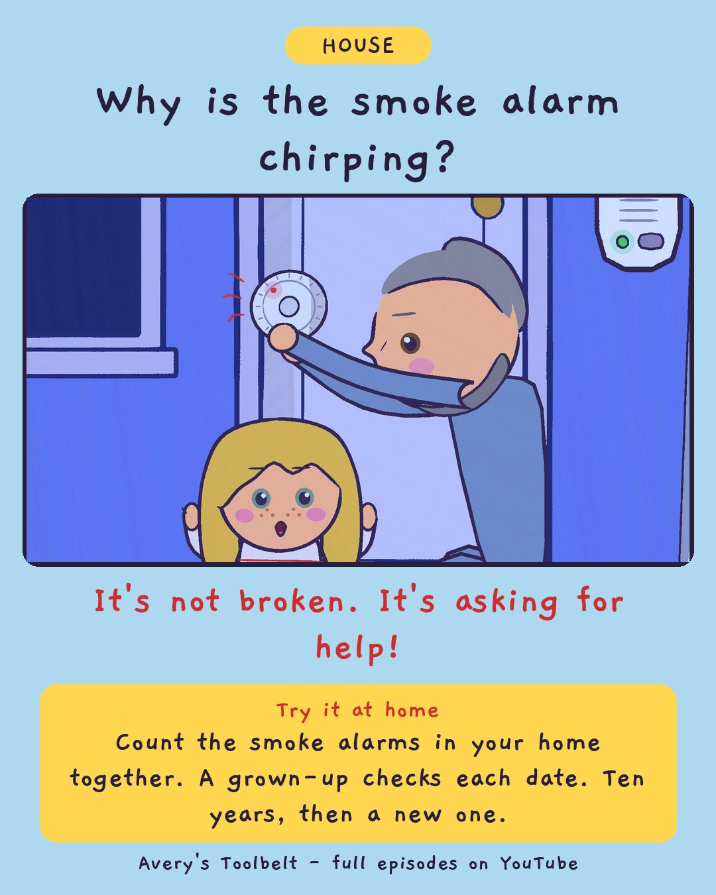

The ChirpWhich Smoke Alarm Is Beeping?
那一聲嗶

Why is the smoke alarm chirping?
It's not broken. It's asking for help!
Try it at home
Count the smoke alarms in your home together. A grown-up checks each date. Ten years, then a new one.
Free printable coloring page (PDF) Watch the full episode on YouTubeAbout this episode, for grown-ups
At two in the morning, something in the house goes beep. Just once. Then nothing for a long time. Then beep again - and nobody can tell which room it is coming from. Avery wants to be the one who finds it, and the only job she is allowed is listening.
Dad changes the wrong alarm first. So Avery stands against the wall in her pajamas, counts the wait out loud, and walks to one door per chirp until she finds the loud one. Gus, meanwhile, sleeps through every bit of it.
What children find out: a single chirp with a long wait means a smoke alarm needs a grown-up's help - and a whole alarm only gets ten years. Three loud beeps and a pause is a different sound: get low, get out, go to the mailbox.
For grown-ups: an episode about a small, uneasy night and a calm way to practice the real thing - in daylight, with everybody awake, and the grown-up's hands on the ladder.